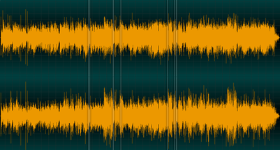

Note: the interactive content on this page only works in Chrome and Safari (desktop/mobile) for now. I'm working to get Firefox support next.
I was inspired reading Jordan Ferguson's book about Donuts, J. Dilla's classic album of hip hop beats. (My brief review: it's a great book, technical while remaining accessible. Read it.) The book got me listening to Donuts again, and in particular I picked up on "Don't Cry". "Don't Cry" does one of my favorite things in hip hop production: it lays bare its own materials. It opens with 40 seconds of seamlessly mixed portions of the song it samples from, then perfectly segues into a beat that flips the original track into something fractured and gorgeous.
Each of the below buttons play samples that are half-second chunks from "I Can't Stand (To See You Cry)" by The Escorts (1974), itself a cover of The Whatnauts' "I Can't Stand to See You Cry" (1973). The Escorts cover is the main (I believe only) sample source in "Don't Cry".
Press this to play a very short beat from J. Dilla's "Don't Cry", which I've reconstructed by picking the above samples (this took me ~6 hours of careful listening to both songs). You can press the buttons below and listen to the different samples.
add kick/snare
For this particular loop, Dilla took miniscule bits of sound from a three-minute-long song, usually grabbing little kick and snare hits at the end of vocal phrases where the instruments were isolated in the mix, but also sometimes picking hits where there was a remnant of vocals. He was also more meticulous than I would have guessed. If you imagine a beat as "One and two and three and four and" (repeating), most producers will snip out "one and", "two and", "three and", "four and" from their sample sources. They'll grab those from different parts of a song (a "one and" from the first verse, a "two and" from the bridge). Dilla chopped things up like, "one", "and", "two", "and", "three", "and", "four", "and". This is really meticulous reconstruction work, and it allowed him to take a "one and" where the "and" half might have had a vocal coming in to mess it up, and instead stitch in an "and" from somewhere else. The result is like a record skipping all around the platter, a half second at a time. Check out this image that shows where the seven samples come from, and how short they are compared to the length of the song:

People like to talk about how Dilla had the best "ear" in hip hop, and they're totally right. Listen to full beat again and listen to just the bass part: it's a legitimate, brand-new bassline that wasn't in the original song. Listen to that transition between guit_lo and string_bass_1: there's a syncopated bass note right at the end of guit_lo and then bam, it segues right into that higher note (maybe a fifth interval? I suck at music theory). And you can't get that just by chopping things up randomly, even if you select good samples. Here's a button you can press that will play the samples in random order:
It still sounds pretty interesting, but it doesn't have the cohesion of Dilla's beat. Let's take it another step, this time retaining the bass/snare hits in their position on the ones and twos, but randomizing the order. This is how you might chop up a sample on an SP-303 sampler (which Dilla famously used for at least a portion of Donuts production), playing around with jumping between ones, twos, threes, and fours from different parts of a song:
So anyway, I hope this little essay/app helps illustrate why Dilla's as good as people say he is.
RIP J. Dilla / Jay Dee/ Dilla Dawg